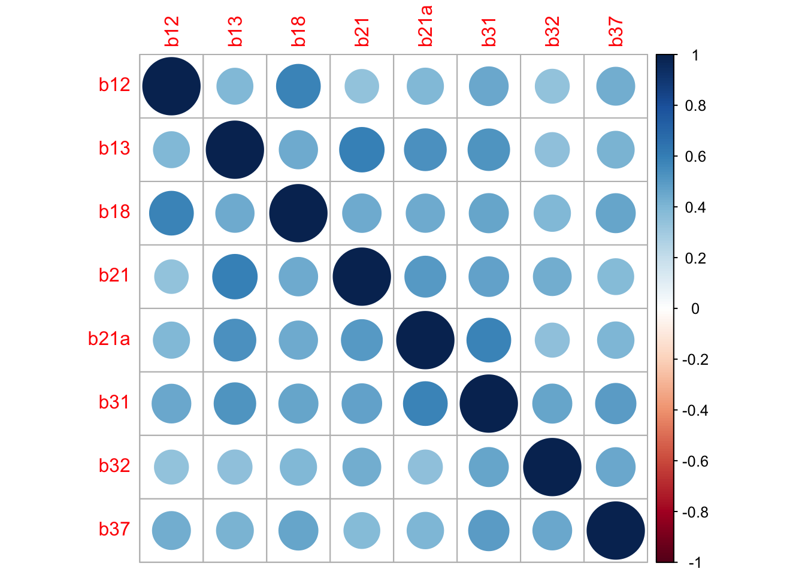
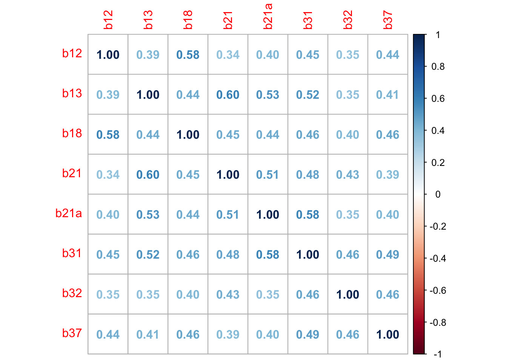
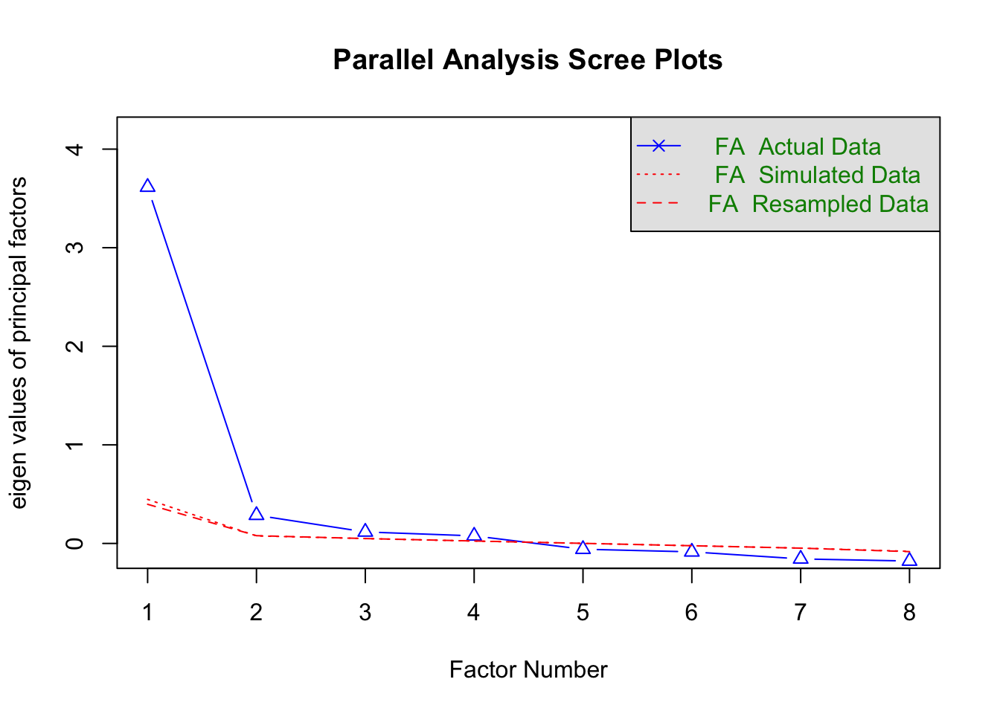
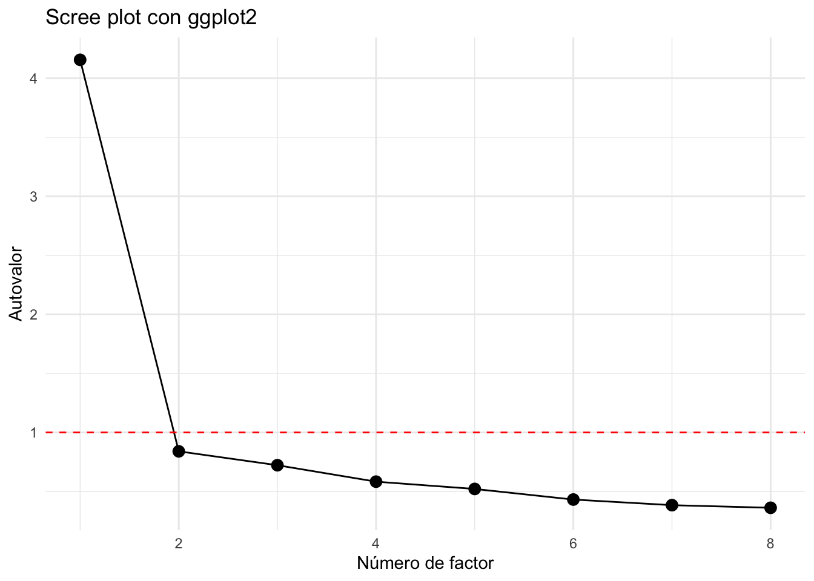

Análisis Factorial
Análisis Factorial
FACULTAD DE CIENCIAS SOCIALES - PUCP
Curso: POL 304 - Estadística para el análisis político 2 | Semestre
2025 - 1
Docente: Marylia Cruz
El Análisis Factorial es una técnica estadística multivariada que permite identificar estructuras latentes (factores) que subyacen a un conjunto de variables observadas (por ejemplo, ítems de un cuestionario).
- Objetivo: reducir la dimensionalidad, identificar grupos de variables correlacionadas, y entender la estructura interna de los datos.
🔍 1. Análisis Factorial Exploratorio (AFE)
Es una técnica exploratoria, que se usa cuando no se conoce la estructura de factores que subyace a las variables. Es decir, no hay una hipótesis previa sobre cuántos factores hay ni qué ítems pertenecen a qué factor.
- 🎯 Objetivo:
Descubrir la estructura latente detrás de un conjunto de variables observadas.
- 🧪 ¿Cuándo se usa?
En etapas iniciales del desarrollo de un instrumento.
Cuando no hay un modelo teórico claro.
Para reducir la dimensionalidad de un conjunto de ítems.
- 🧰 Métodos comunes:
-Extracción: componentes principales, mínimos cuadrados, máxima verosimilitud.
Rotación: Varimax (ortogonal), Promax (oblicua).
Evaluación: KMO, test de esfericidad de Bartlett, scree plot, autovalores > 1.
📦 Ejemplo:
Estás creando una escala para medir “actitudes hacia la ciencia”. Usas AFE para ver si tus ítems se agrupan en 2 factores (por ejemplo, ciencia y tecnología), sin haber definido eso previamente.
Etapas o pasos del AEF
1. Verificación de adecuación de datos
Correlaciones entre variables.
Pruebas: KMO y Bartlett.
2. Extracción de factores
Método más común: Análisis de componentes principales (PCA) o análisis de factores (FA).
3. Determinación del número de factores
Criterio de autovalores > 1.
Análisis del gráfico de sedimentación (scree plot).
Criterios teóricos.
4. Rotación
Varimax (ortogonal) o Promax (oblicua) para interpretar mejor los factores.
5. Interpretación
¿Qué variables están más asociadas con qué factor?
En R Studio
0. Apertura de la base de datos
✅ 2. Análisis Factorial Confirmatorio (AFC)
Es una técnica confirmatoria, basada en un modelo teórico o hipótesis previa. Aquí ya sabes cuántos factores hay y qué ítems deberían cargar en cada factor, y deseas comprobar si los datos empíricos validan ese modelo.
🎯 Objetivo: Validar un modelo factorial específico y estimar qué tan bien se ajusta a los datos.
🧪 ¿Cuándo se usa?
Cuando el instrumento ya fue diseñado con base teórica. Para validar escalas ya existentes. En etapas avanzadas de investigación cuantitativa.
🧰 Métodos comunes:
Estimación por Máxima verosimilitud (ML) o métodos robustos.
Evaluación del ajuste del modelo:
χ² (Chi cuadrado): idealmente no significativo.
CFI, TLI: > 0.90
RMSEA: < 0.08
SRMR: < 0.08
Se puede implementar con lavaan o sem en R.
library(rio)
data=import("Peru2023.sav")
#names(data)- Seleccionamos las variables que emplearemos
library(dplyr)
confianza=data %>%
select(b12,b13,b18,b21,b21a,b31,b32,b37)- Omitimos los NA
confianza=na.omit(confianza)- Calculamos la matriz de correlaciones
matriz_correlaciones=cor(confianza)- Gráfico de Matriz de correlaciones
library(corrplot)
corrplot(matriz_correlaciones,method = "circle",typer="upper")
library(corrplot)
corrplot(matriz_correlaciones, method = 'number')
library(psych)
KMO(confianza)## Kaiser-Meyer-Olkin factor adequacy
## Call: KMO(r = confianza)
## Overall MSA = 0.89
## MSA for each item =
## b12 b13 b18 b21 b21a b31 b32 b37
## 0.87 0.88 0.88 0.87 0.90 0.90 0.90 0.92cortest.bartlett(matriz_correlaciones)## Warning in cortest.bartlett(matriz_correlaciones): n not specified, 100 used## $chisq
## [1] 294.048
##
## $p.value
## [1] 3.714958e-46
##
## $df
## [1] 28fa.parallel(confianza,fa="fa",n.iter = 100,show.legend = TRUE)
## Parallel analysis suggests that the number of factors = 4 and the number of components = NAeigenvalues=eigen(matriz_correlaciones)$valueslibrary(tibble)
library(ggplot2)##
## Attaching package: 'ggplot2'## The following objects are masked from 'package:psych':
##
## %+%, alphadf_eigen=tibble(
Factor=1:length(eigenvalues),
Autovalor=eigenvalues
)ggplot(df_eigen, aes(x=Factor, y=Autovalor))+
geom_line(group=1)+
geom_point(size=3)+
geom_hline(yintercept=1, linetype="dashed",color="red")+
labs(title="Scree plot con ggplot2", x="Número de factor",y="Autovalor")+theme_minimal()
- Según el gráfico solo se debe calcular un indicador. Sin embargo, en haras de la intepretación vamos a colocar 2.
fa(confianza,nfactors = 2,fm="ml")## Loading required namespace: GPArotation## Factor Analysis using method = ml
## Call: fa(r = confianza, nfactors = 2, fm = "ml")
## Standardized loadings (pattern matrix) based upon correlation matrix
## ML1 ML2 h2 u2 com
## b12 -0.06 0.80 0.58 0.42 1.0
## b13 0.77 -0.02 0.57 0.43 1.0
## b18 0.13 0.65 0.56 0.44 1.1
## b21 0.80 -0.07 0.56 0.44 1.0
## b21a 0.64 0.10 0.50 0.50 1.0
## b31 0.54 0.25 0.54 0.46 1.4
## b32 0.35 0.27 0.33 0.67 1.9
## b37 0.27 0.42 0.41 0.59 1.7
##
## ML1 ML2
## SS loadings 2.41 1.65
## Proportion Var 0.30 0.21
## Cumulative Var 0.30 0.51
## Proportion Explained 0.59 0.41
## Cumulative Proportion 0.59 1.00
##
## With factor correlations of
## ML1 ML2
## ML1 1.0 0.7
## ML2 0.7 1.0
##
## Mean item complexity = 1.3
## Test of the hypothesis that 2 factors are sufficient.
##
## df null model = 28 with the objective function = 3.08 with Chi Square = 4576.99
## df of the model are 13 and the objective function was 0.12
##
## The root mean square of the residuals (RMSR) is 0.03
## The df corrected root mean square of the residuals is 0.05
##
## The harmonic n.obs is 1491 with the empirical chi square 94.59 with prob < 1.8e-14
## The total n.obs was 1491 with Likelihood Chi Square = 172.27 with prob < 6.4e-30
##
## Tucker Lewis Index of factoring reliability = 0.925
## RMSEA index = 0.091 and the 90 % confidence intervals are 0.079 0.103
## BIC = 77.27
## Fit based upon off diagonal values = 0.99
## Measures of factor score adequacy
## ML1 ML2
## Correlation of (regression) scores with factors 0.92 0.89
## Multiple R square of scores with factors 0.85 0.80
## Minimum correlation of possible factor scores 0.69 0.60Intrepetamos según las cargas factoriales mayores a 2.
factores2=fa(confianza,nfactors = 2,fm="ml",rotate = "varimax")
factores2## Factor Analysis using method = ml
## Call: fa(r = confianza, nfactors = 2, rotate = "varimax", fm = "ml")
## Standardized loadings (pattern matrix) based upon correlation matrix
## ML1 ML2 h2 u2 com
## b12 0.23 0.73 0.58 0.42 1.2
## b13 0.70 0.29 0.57 0.43 1.3
## b18 0.35 0.66 0.56 0.44 1.5
## b21 0.70 0.26 0.56 0.44 1.3
## b21a 0.62 0.35 0.50 0.50 1.6
## b31 0.58 0.45 0.54 0.46 1.9
## b32 0.42 0.39 0.33 0.67 2.0
## b37 0.40 0.50 0.41 0.59 1.9
##
## ML1 ML2
## SS loadings 2.22 1.85
## Proportion Var 0.28 0.23
## Cumulative Var 0.28 0.51
## Proportion Explained 0.55 0.45
## Cumulative Proportion 0.55 1.00
##
## Mean item complexity = 1.6
## Test of the hypothesis that 2 factors are sufficient.
##
## df null model = 28 with the objective function = 3.08 with Chi Square = 4576.99
## df of the model are 13 and the objective function was 0.12
##
## The root mean square of the residuals (RMSR) is 0.03
## The df corrected root mean square of the residuals is 0.05
##
## The harmonic n.obs is 1491 with the empirical chi square 94.59 with prob < 1.8e-14
## The total n.obs was 1491 with Likelihood Chi Square = 172.27 with prob < 6.4e-30
##
## Tucker Lewis Index of factoring reliability = 0.925
## RMSEA index = 0.091 and the 90 % confidence intervals are 0.079 0.103
## BIC = 77.27
## Fit based upon off diagonal values = 0.99
## Measures of factor score adequacy
## ML1 ML2
## Correlation of (regression) scores with factors 0.84 0.81
## Multiple R square of scores with factors 0.70 0.66
## Minimum correlation of possible factor scores 0.41 0.31scores=factores2$scoresdata2=cbind(confianza,scores)library(scales)##
## Attaching package: 'scales'## The following objects are masked from 'package:psych':
##
## alpha, rescaledata2$Confianza_RPoliticas=rescale(data2$ML1, to=c(0,100))
data2$Confianza_Represion=rescale(data2$ML2, to=c(0,100))